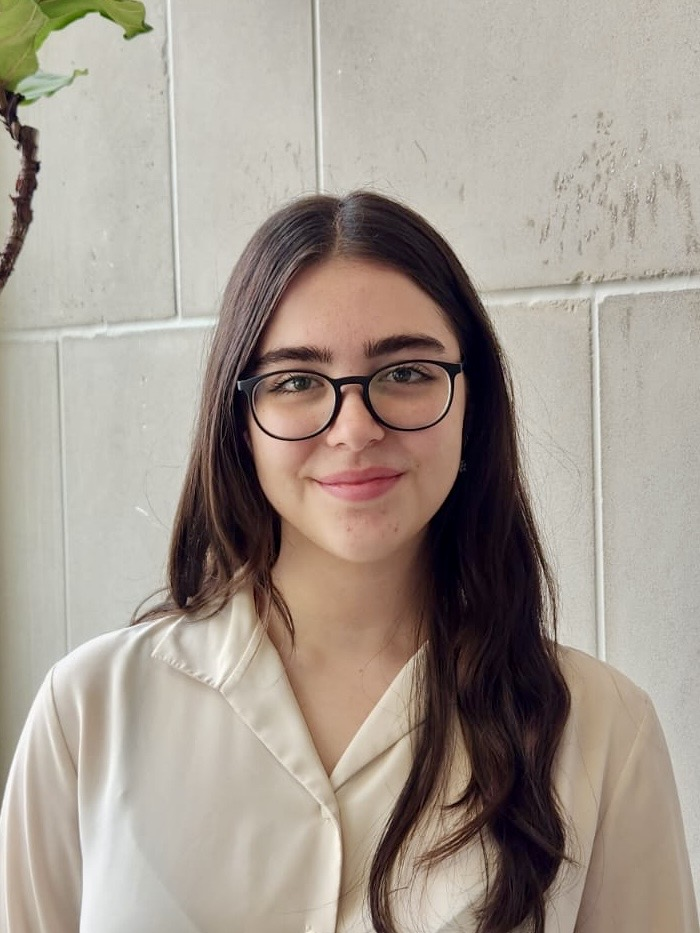

Meet our Exec Board
-

Lynna Deng Co-President
AutoAquaponics -

Hannah Wilks Co-President
AutoAquaponics Project Manager -

Jonathan Wu Finance Chair
AutoAquaponics -

Julia Ostrander PR Chair
AutoAquaponics -
 Milagros Ruiz Lodwig Secretary
PLAstic Co-Project Manager -

Andre Chen Webmaster
AutoAquaponics Software Subteam Lead -

Kyan Shlipak AutoAquaponics Project Manager -

Samaher Nassar PLAstic Co-Project Manager
×


![Helena is a Junior studying mechanical engineering with a robotics concentration and a computer science minor. She is passionate about sustainability and enjoys contributing to design of AutoAquaponics projects and managing the finances of all ESW projects. Outside of ESW she works in a robotics and AI lab at Northwestern, plays in several music groups, and loves reading, hiking, skiing and generally spending time outdoors.LINKEDINLINKhttps://www.linkedin.com/in/helena-young-28b55721b/ PORTFOLIOLINKhttps://he1enayoung.github.io/](../images/exec/HelenaYoung.jpeg)